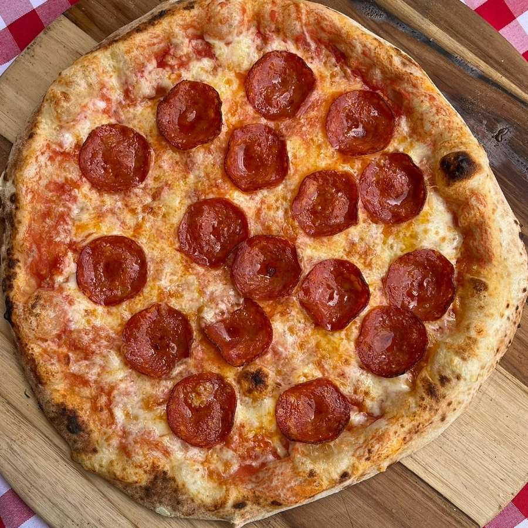
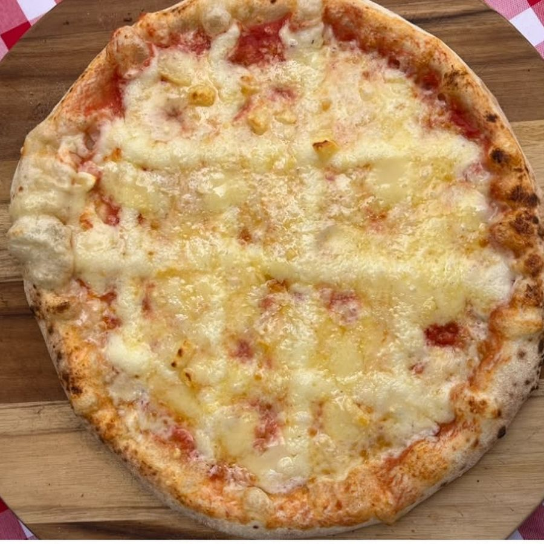

1
Margherita
Molho de tomate, muçarela e manjericão.
Contém glúten, leite
R$ 39,90
12 disponíveis
1
O disco continua, menor e dentro de uma moldura. Três formas de delimitar, e os selos refeitos. Redimensione a janela: todas respondem de 320 px a 1440 px.
Variação A1
Card com borda e fundo. O disco cai para ~65% da largura e ganha respiro em volta; uma divisória separa a informação da ação. É a leitura mais direta: foto, dado, botão.
Molho de tomate, muçarela e manjericão.
Contém glúten, leite
R$ 39,90
12 disponíveis

Calabresa fatiada, cebola e muçarela.
Contém glúten, leite
R$ 39,90
restam 4

Pepperoni levemente picante e muçarela.
Contém glúten, leite
R$ 45,90
volta em 28.08
Variação A2
Disco pequeno à esquerda, nome e preço à direita dele, ação em largura total embaixo. Cabe mais produto na tela, o preço fica alinhado entre os cards e o card fica baixo — bom para os 12 sabores sem rolagem longa. O disco vira âncora, não protagonista.
39,90
Molho de tomate, muçarela e manjericão.
Contém glúten, leite
12 disponíveis

49,90
Nutella e avelã tostada em pedaços.
Contém avelã
9 disponíveis
Variação A3
O disco vive num painel de tom diferente no topo do card — vira “palco”, com moldura clara, sem precisar de borda ao redor da foto. A informação fica num bloco visualmente separado embaixo. É a que melhor resolve “imagem solta” sem encolher demais a pizza.
39,90
Molho de tomate, muçarela e manjericão.
Contém glúten, leite
12 disponíveis
39,90
Calabresa fatiada, cebola e muçarela.
Contém glúten, leite
restam 4 — última chamada da fornada
45,90
Pepperoni levemente picante e muçarela.
Contém glúten, leite
volta na fornada de 28.08
Selos
A pílula cinza genérica saiu. O ranking virou marca circular amarela — lida como selo de qualidade, não como etiqueta de loja. O esgotado virou carimbo diagonal sobre a foto dessaturada, que é como uma cozinha marca o que acabou.
ranking · disco
ranking · fita
esgotado · carimbo
escasso · anel
